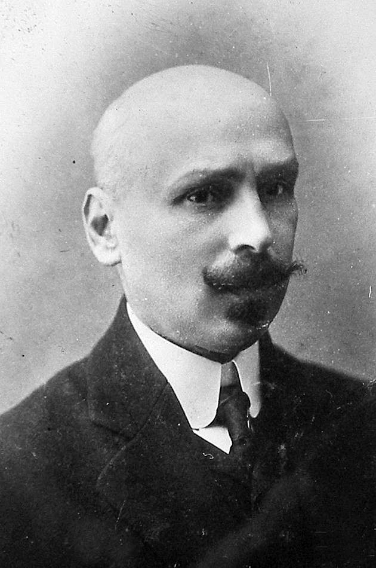
Михайло Коцюбинський
1864 – 1913
Український письменник і представник модернізму. Автор відомих повістей та оповідань про життя українського села та психологію героїв.
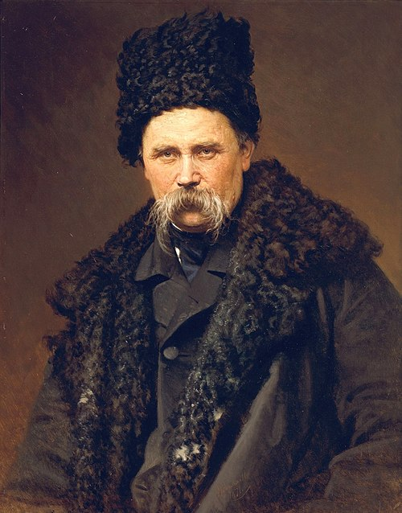
Тарас Шевченко
1814 – 1861
Видатний український поет, художник та громадський діяч. Його поезія глибоко вплинула на розвиток національної свідомості України.
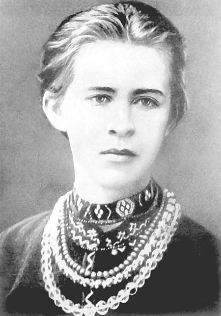
Леся Українка
1871 – 1913
Видатна українська письменниця та поетеса. Її творчість відзначається драматургією, поезією та боротьбою за свободу і права людини.
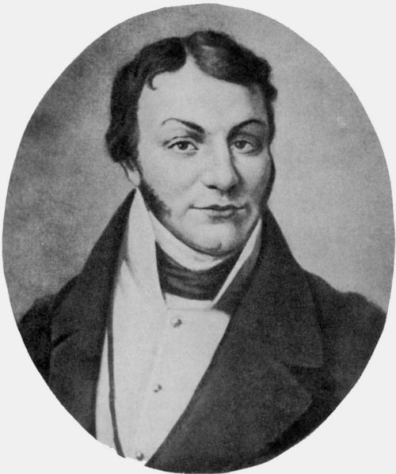
Григорій Квітка-Основ`яненко
1778 – 1843
Перший український прозаїк, автор класичних повістей та оповідань, що описують життя українського села та побут людей.
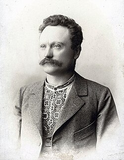
Іван Франко
1856 – 1916
Український письменник, поет, публіцист і вчений. Автор багатьох повістей, поезій і літературно-критичних праць.
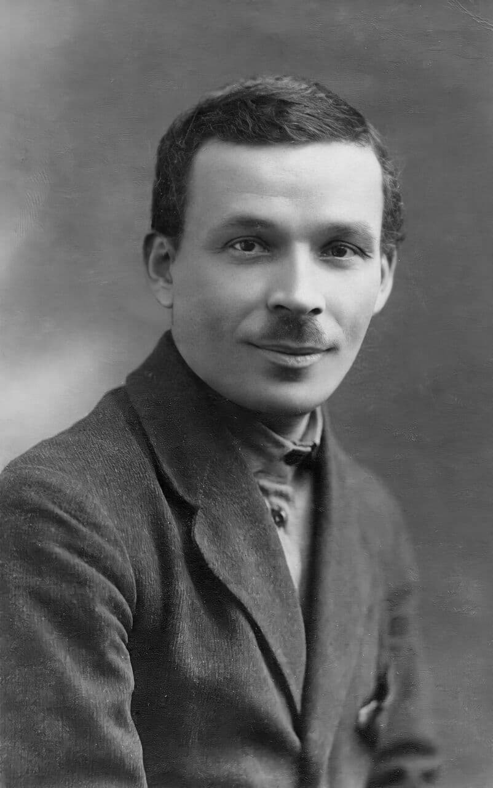
Микола Куліш
1892 – 1937
Відомий український драматург, автор комедій та п'єс, які відображають соціальні проблеми та конфлікти свого часу.
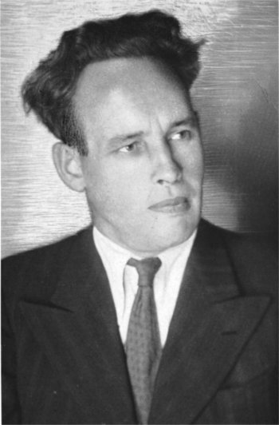
Іван Багряний
1906 – 1963
Український письменник і громадський діяч. Його твори часто зображують боротьбу за свободу та життя в умовах радянських репресій.

Пантелеймон Куліш
1819 – 1897
Письменник, історик і перекладач. Один з перших авторів українських романів та літературних досліджень.
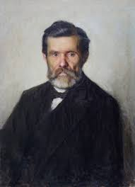
Іван Нечуй-Левицький
1838 – 1918
Український письменник, автор реалістичних повістей та оповідань про життя селян та міської інтелігенції.
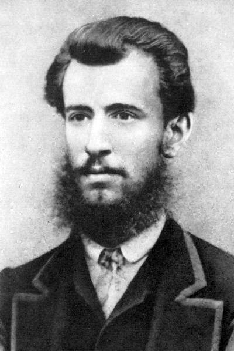
Панас Мирний
1849 – 1920
Відомий український письменник-реаліст. Його романи зображують суспільні проблеми та моральні дилеми героїв.
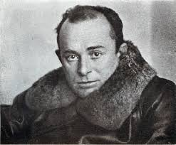
Остап Вишня
1889 – 1956
Український гуморист і сатирик. Автор автобіографічних творів та оповідань з дотепним зображенням життя людей.
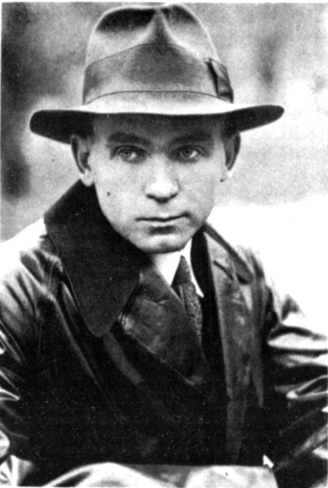
Улас Самчук
1905 – 1987
Письменник і журналіст, відомий своїми історичними романами про життя українського народу та трагічні події XX століття.

Володимир Винниченко
1880 – 1951
Український письменник, політик і драматург. Його романи та п’єси відображають соціальні та психологічні проблеми людей.
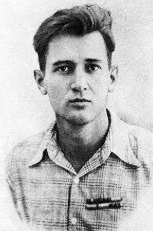
Олесь Гончар
1918 – 1995
Український письменник і громадський діяч. Автор романів, які висвітлюють історію та життя українського суспільства XX століття.